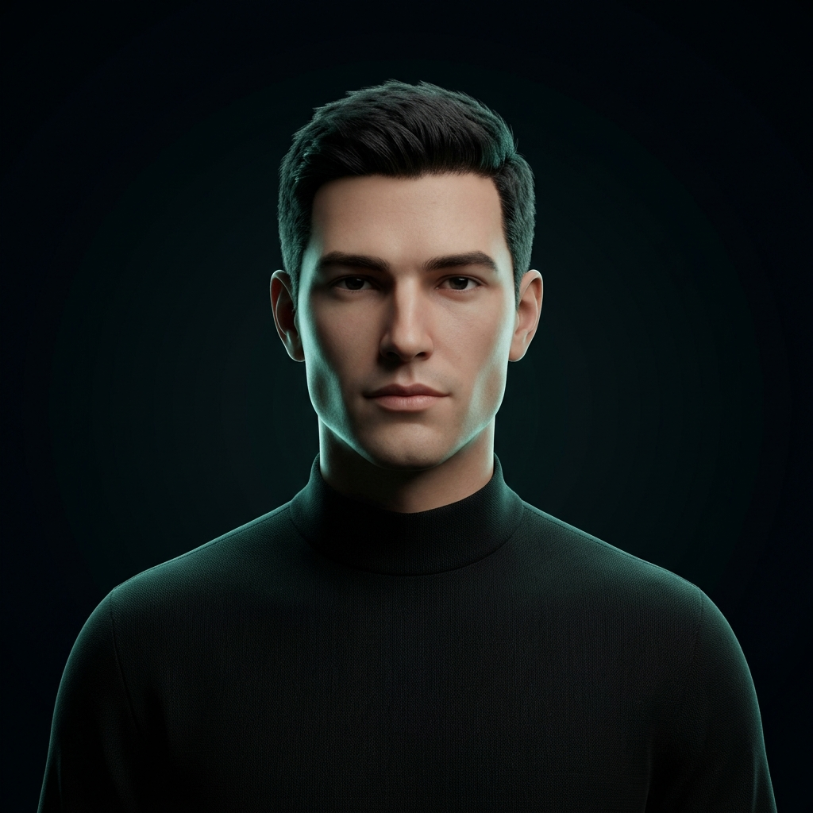

Systems of
Intelligence.
Cortelo designs, trains, and ships bespoke artificial intelligence architectures, autonomous agents, and resilient enterprise software platforms from model to interface.
Verified Production Outcomes.
Automated Regulatory Extraction
Extracting compliance disclosures from 150,000+ statutory filings using hybrid vector embeddings and deterministic verification.
Autonomous Refactor Harness
Multi-agent software harness orchestrating codebase-wide refactors, AST modifications, and zero-breaking regression suites.
Neural Dispatch Optimization
Graph neural network routing metropolitan transport fleets dynamically based on weather, congestion, and driver telemetry.
The Principals Behind Cortelo.
Senior software engineers who build, architect, and take personal responsibility for every deployment.

Hunzila Nisar
Specializing in autonomous multi-agent orchestration, neural pipeline latency optimization, and enterprise full-stack system architecture.
Mahreen Hashir
Directing model evaluation benches, zero-hallucination deterministic guardrails, high-volume MLOps, and enterprise security perimeters.
Let's Engineer Your Advantage.
Schedule an architectural discovery session directly with Hunzila and Mahreen.